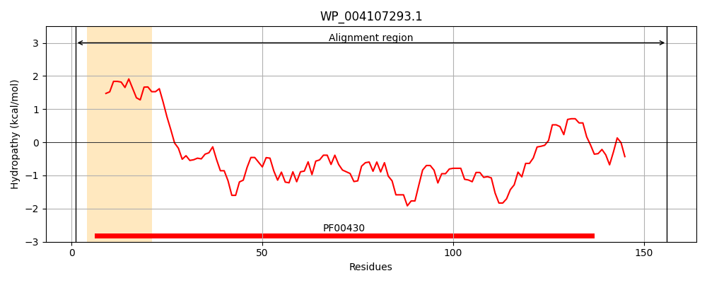
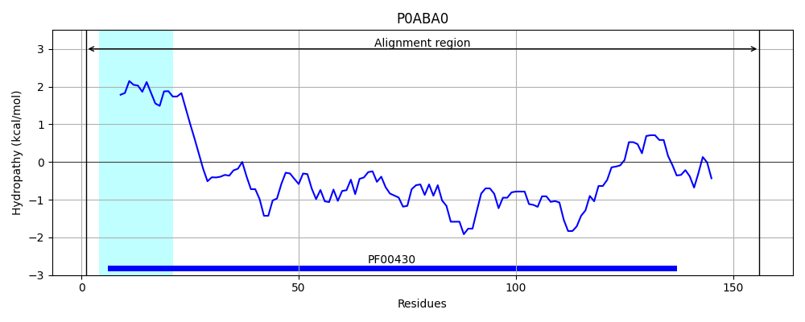
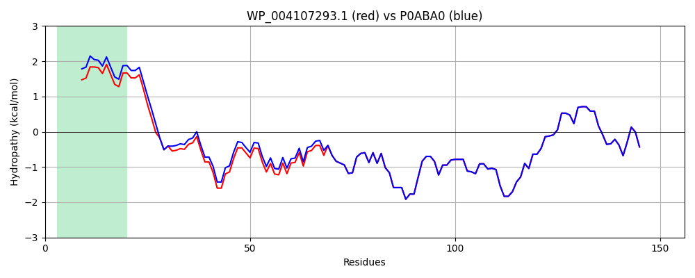

Hit Accession: P0ABA0
Hit TCID: 3.A.2.1.1
Hit Description: gnl|BL_ORD_ID|8695 gnl|TC-DB|P0ABA0|3.A.2.1.1 ATP synthase B chain - Escherichia coli.
Mach Len: 156
e:0.000000
Query TMS Count : 1
Hit TMS Count: 1
TMS-Overlap Score: 0.900000
Predicted Substrates:CHEBI:5584;hydron
BLAST Alignment:
Score: 712 , Bit scores: 278 bits, E-value: 4.5e-98, Alignment length: 156, Percentage identity: 95
Query: 1 MNMNATILGQAIAFVIFVWFCMKYVWPPLMAAIEKRQKEISDGLASAERAKKDLDLAQANATDQLKKAKAEAQVIIEQANKRRSQILDEAKAEAEQERTKIVAQAQAEIDAERKRAREELRKQVAILAVAGAEKIIERSVDEAANSDIVDKLVAEL 156
MN+NATILGQAIAFV+FV FCMKYVWPPLMAAIEKRQKEI+DGLASAERA KDLDLA+A+ATDQLKKAKAEAQVIIEQANKRRSQILDEAKAEAEQERTKIVAQAQAEI+AERKRAREELRKQVAILAVAGAEKIIERSVDEAANSDIVDKLVAEL
Sbjct: 1 MNLNATILGQAIAFVLFVLFCMKYVWPPLMAAIEKRQKEIADGLASAERAHKDLDLAKASATDQLKKAKAEAQVIIEQANKRRSQILDEAKAEAEQERTKIVAQAQAEIEAERKRAREELRKQVAILAVAGAEKIIERSVDEAANSDIVDKLVAEL 156 | Protein Hydropathy Plots: |
|---|
|  |  |
Pairwise Alignment-Hydropathy Plot:
|
|---|
|  |